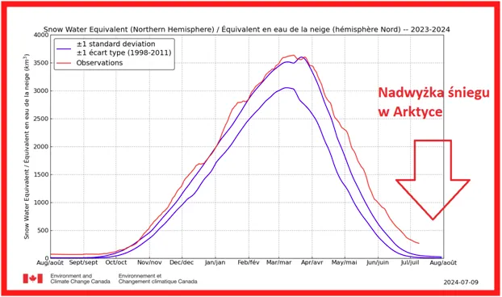
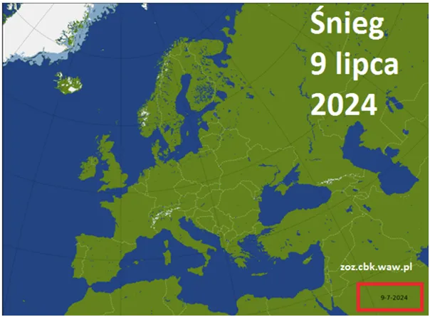
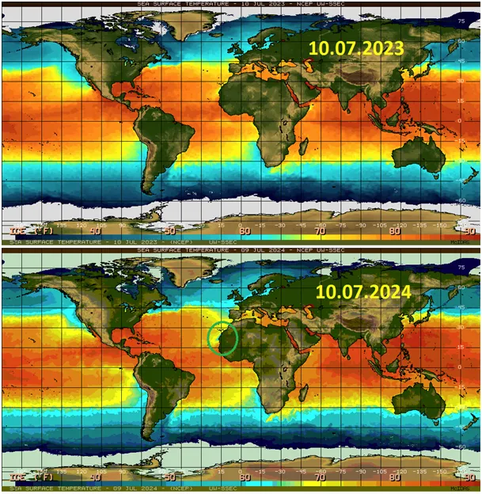
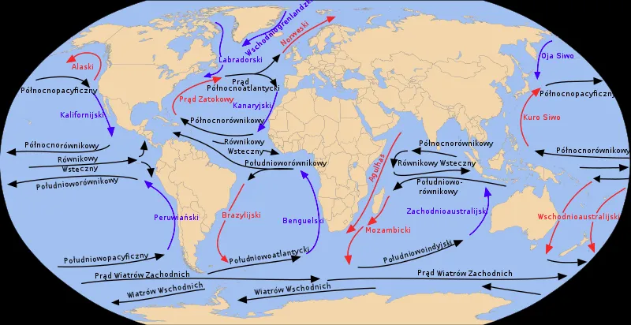

Arktyka daje się poznać w Afryce.
W szczycie lata w norweskich górach w pobliżu ciepłego Atlantyku ciągle przybywa śniegu. Góry Skandynawskie z najwyższym szczytem Galdhøpiggen wysokim na 2469 m n.p.m., co czyni te góry analogicznie wysokie do polskich Tatr. Leżą w południowej Norwegii, co daje w linii prostej ok. 1400 km. W Tatrach śniegu nie mamy tyle, bo Morze Śródziemne nas rozpieszcza.

Tymczasem w Arktyce zalegają skrajnie duże ilości śniegu. Zasięg pokrywy śnieżnej jest większy niż w rekordowych latach, ale jego ilość jest jeszcze bardziej rekordowa, co oznacza, że tego grubego białego dywanu nie uda się stopić w tym sezonie i obszary wiecznej zmarzliny drugi rok z kolei się powiększą. Tak to bywa ze zmianami klimatu, są niezależne od człowieka i będą zawsze "zaskakiwać" polityków, jeśli "nauka" nie zajmie się tym tematem na serio.

My i wielu poważnych naukowców wiemy, że z powodu nadchodzącej niskiej aktywności słońca kolejne dekady to będzie raczej ochłodzenie, a bardziej zmiana warunków pogodowych w różnych obszarach.

Na trzeciej mapce zaznaczyłem zielonym kółkiem zimny prąd oceaniczny, który płynie z północy na południe pod ciepłym Prądem Zatokowym. Jego impet widzimy w postaci zimnej wody w okolicach Francji i Portugalii oraz na wybrzeżach Afryki Zachodniej.

Wczesna wiosna była skutkiem wysokiej aktywności ciepłego prądu oceanicznego z południa. Obecnie sytuacja się odwróciła i zimny prąd z północy powoduje, że w norweskich górach, w lipcu ciągle przybywa śniegu.
Zatem czekamy na pierwsze opady śniegu w Tatrach, w najwyższych partiach bywały już we wrześniu, pożyjemy zobaczymy.
Paweł Klimczewski